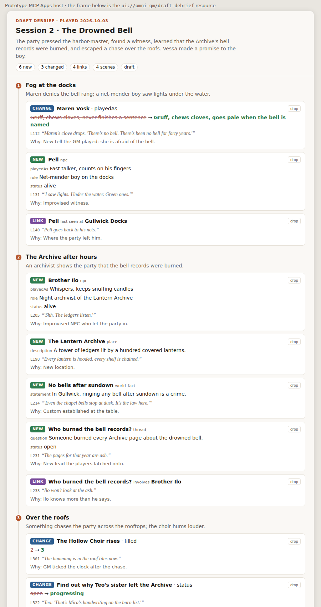
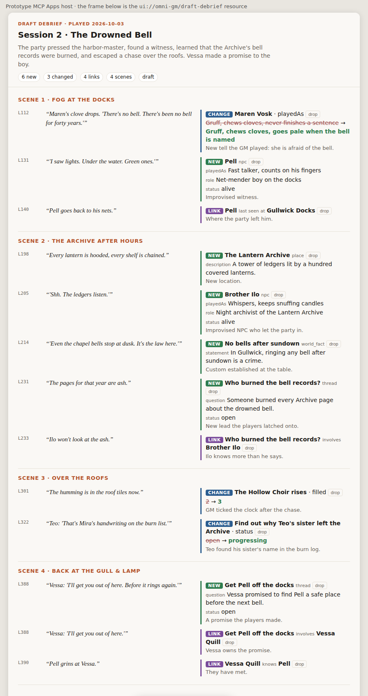
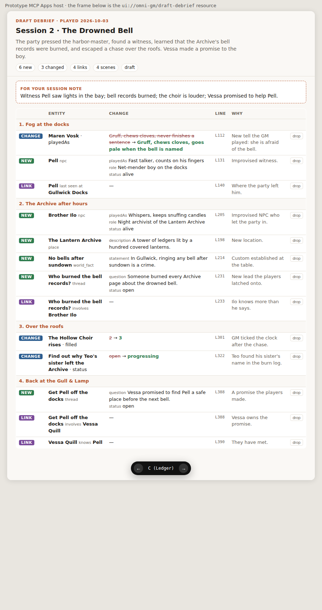

How should the story-state store and the draft-debrief view be shaped?
Branch prototype/store-and-debrief-view. Example data is invented. Nothing here is production code.
1. Question
The first version of Omni-GM is "state in, intent out": after each session, a debrief turns the transcript into reviewed changes to the story state, scene by scene. ADR 0001 says the story state lives only in our own thin MCP server over a local Convex deployment. This brief shows the shape of that store before the spec: the starter schema with property and relationship definitions, how a deliberate schema change works, how a draft debrief and its commits are modeled, how the history is read per entity, the MCP tool surface, the MCP UI view of a draft debrief, and how the server moves from local to hosted without a migration. A working prototype backs every section: a real MCP client drafts a debrief against a local Convex deployment, and the view renders that draft.
What the earlier prototypes teach this design (ideas only, no code)
- Never rebuild the truth wholesale. One earlier import cleared and rebuilt all records. Here every change is an append-only history row inside one commit.
- Proposals before truth. Several attempts reviewed AI changes before they counted. Here the draft debrief is that gate, at session granularity, not per field.
- Typed property definitions keep the AI honest. An earlier engine typed its properties. Here the server rejects any property the schema does not define, with the allowed list.
- Short, bounded reads. A real prep showed that long answers defeat the purpose. Here
story_entityreturns the current state, and history only on request; lists cap at 25. - The hosted move is where an attempt stalled. Here the same Convex code runs locally and hosted, and the move is a snapshot import that keeps every id.
- Complexity killed momentum. The prototype has 12 tools, 13 tables, and no app of its own.
2. Change map
newuntouchedEverything is new; the repo has no code yet. The notes vault is untouched by design.
flowchart LR
subgraph Client["GM's AI client (Claude Desktop / Code)"]
AI["AI: reads transcript,
drafts changes"]
V["Draft-debrief view
(MCP Apps iframe)"]
end
Vault["Notes vault
session notes + prep
(no state copy)"]:::untouched
subgraph Convex["Convex deployment (local now, hosted later)"]
MCP["/mcp HTTP action
auth → ownerId
JSON-RPC: tools, resources"]:::new
Store["store.ts
internal queries + mutations
validation, commit, history"]:::new
DB[("tables: structure,
definitions, entities,
drafts, commits, history")]:::new
end
AI -- "tools/call (Bearer token)" --> MCP
V -- "tools/call via host" --> MCP
MCP -- "resources/read ui://omni-gm/draft-debrief" --> V
MCP -- "ctx.runQuery / runMutation (internal)" --> Store --> DB
AI -. "short summary" .-> Vault
classDef new fill:#d8efe0,stroke:#2f7d4f
classDef untouched fill:#eee,stroke:#999
3. Contracts
Seam 1: MCP tool surface (AI client ↔ /mcp)
The descriptions are part of the contract: they steer the AI. Source: convex/tools.ts.
| Tool | Input | Does |
|---|---|---|
story_structure | — | Adventures and sessions in order, each with its debrief status. The entry point. |
story_schema | — | Kinds, allowed properties (type, enum values), relationship types (from/to kinds). |
story_find | kind?, nameContains? | At most 25 ids and names. Used to avoid duplicates. |
story_entity | entityId, withHistory? | Current properties and relationships; with history, every past change with scene, line, why. |
session_create | adventureId, playedOn, scenes[] | Records a played session and its ordered scenes, the anchors for changes. |
debrief_start | sessionId, summary, shortSummary | Opens or updates the one draft debrief of a session. |
debrief_propose | debriefId, changes[] | Adds changes; each is validated alone, rejected ones come back with a reason. |
debrief_drop | changeId | Removes one draft change. A fix is drop + propose. |
debrief_show | debriefId | Returns the draft scene by scene; _meta.ui.resourceUri opens the view. |
debrief_commit | debriefId | Applies all draft changes in one transaction as one commit. |
story_correct | reason, changes[] | A small commit outside a debrief; all or nothing. |
schema_change | reason, ops[] | Adds a kind, adds or retires a property, adds a relationship type; recorded as a schema commit. |
The change that every write tool carries:
type EntityRef = Id<"entities"> | `$${string}`; // existing id, or $tempKey created earlier in the same draft
type Change =
| { op: "create_entity"; tempKey: string; kind: string; name: string; properties: Record<string, unknown> }
| { op: "set_property"; entity: EntityRef; key: string; value: unknown }
| { op: "relate"; type: string; from: EntityRef; to: EntityRef }
| { op: "unrelate"; type: string; from: EntityRef; to: EntityRef };
type ProposedChange = {
scene: number; // scene ordinal within the debriefed session
change: Change;
transcript: { line: number; quote: string }; // where it happened at the table
why: string;
};- Invariants: no property outside the kind's definitions; enum values only from the list; relationships only between the defined kinds; no second entity with the same name; one debrief per session; a committed debrief never changes again.
- Errors: per-change rejection in
debrief_propose(the rest are kept); whole-call rejection instory_correctanddebrief_commit; tool errors returnisError: truewith a sentence the AI can act on. - Performance: every call is one Convex query or mutation on indexes; a debrief is tens of changes, not thousands.
Seam 2: the view (host iframe ↔ /mcp)
// resources/read ui://omni-gm/draft-debrief → mimeType "text/html;profile=mcp-app", one self-contained HTML file
// host → view: ui/notifications/tool-result { structuredContent: DraftDebrief }
// view → host: tools/call debrief_drop | debrief_show (the only writes the view makes)
type DraftDebrief = {
debriefId: string; status: "draft" | "committed"; title: string; playedOn: string;
summary: string; shortSummary: string;
scenes: { ordinal: number; title: string; summary: string;
changes: { changeId: string; op: Change["op"]; subject: string; kind?: string; key?: string;
before?: unknown; after?: unknown; object?: string; properties?: Record<string, unknown>;
transcript: { line: number; quote: string }; why: string }[] }[];
};Seam 3: auth (request → owner)
// local (prototype): Bearer <MCP_TOKEN> → ownerId "local"
// hosted (later): Bearer <OAuth access token> → verify JWT → ownerId = subject
async function ownerFromRequest(request: Request): Promise<string | null>Everything behind this function is the same locally and hosted. Every campaign row carries ownerId from day one.
4. Flows
Write path: debrief of one session
sequenceDiagram participant GM participant AI as AI client participant M as /mcp participant S as store (Convex) GM->>AI: "Debrief last session" + transcript file AI->>M: story_structure, story_schema, story_find AI->>M: session_create(scenes) AI->>M: debrief_start(summary, shortSummary) AI->>M: debrief_propose(changes[]) M->>S: validate each change, store draft rows S-->>AI: per-change accepted / rejected + reason AI->>M: debrief_show M-->>GM: view, scene by scene GM->>AI: "Pell is a girl, and drop the sundown law" AI->>M: debrief_drop, debrief_propose GM->>AI: "Looks right, commit" AI->>M: debrief_commit M->>S: one transaction: commit row, apply changes, history rows, delete draft AI->>GM: short summary for the session note
Read path: prep
sequenceDiagram participant AI as AI client participant M as /mcp AI->>M: story_structure (where are we?) AI->>M: story_find kind=thread / clock / character_goal AI->>M: story_entity(id) (current tip) AI->>M: story_entity(id, withHistory) only when the GM asks "since when?"
Failure path: the AI invents a property
sequenceDiagram participant AI as AI client participant M as /mcp AI->>M: debrief_propose [ set_property Maren.mood = "scared" ] M-->>AI: rejected: "mood" is not a property of npc. Allowed: playedAs, role, status. A new property needs a deliberate schema_change. Note over AI: AI rewrites it as playedAs, or asks the GM whether to add the property
5. Data
Source: convex/schema.ts. Sixteen indexes, no full scans on any tool path.
erDiagram
campaigns ||--o{ adventures : has
adventures ||--o{ sessions : has
sessions ||--o{ scenes : "ordered"
sessions ||--o| debriefs : "one"
debriefs ||--o{ draftChanges : "while draft"
scenes ||--o{ draftChanges : "anchors"
campaigns ||--o{ kindDefinitions : defines
campaigns ||--o{ propertyDefinitions : defines
campaigns ||--o{ relationshipDefinitions : defines
campaigns ||--o{ entities : "story state"
entities ||--o{ relationships : "from / to"
campaigns ||--o{ commits : "debrief | correction | schema | seed"
commits ||--o{ history : "append-only"
entities ||--o{ history : "by_entity"
scenes ||--o{ history : "where"
Starter schema (the seed commit)
| Kind | Properties |
|---|---|
| npc | role text · playedAs text · status alive | dead | missing | unknown |
| player_character | concept text |
| place | description text |
| world_fact | statement text |
| thread | question text · status open | resolved | dropped |
| character_goal | goal text · status open | progressing | fulfilled | abandoned |
| clock | segments number · filled number · visibility shown | hidden · whenFull text |
| Relationship type | From → to |
|---|---|
last_seen_at (last seen at / last place of) | npc, player_character → place |
located_in | place → place |
involves | thread, world_fact → npc, place, player_character, world_fact |
pursues | player_character → character_goal |
pressures | clock → thread, player_character, place |
knows | npc, player_character → npc, player_character |
History, per entity
Each applied change writes one history row per touched entity: the change, the value before, the scene, the transcript line, the why, and its commit (kind and reason). A schema commit writes rows without an entity. Reading an entity's history is one index range: history.by_entity. Current state is materialized on entities in the same transaction, so prep never folds history.
Migration
None. There is no older data; ADR 0001 seeds from the latest session only. The seed is itself a commit, so the history starts at the seed.
6. The draft-debrief view
One MCP Apps resource, three layouts. Switch with the floating bar or ← →. Rendered by the prototype host from live MCP data (session 2 of the invented campaign).






7. Local → hosted without a migration
flowchart LR L["Local deployment
127.0.0.1:3211/mcp
static token"] -- "convex export (ZIP)" --> Z[("snapshot")] Z -- "convex import --prod --replace
keeps _id and _creationTime" --> H["Hosted Convex prod
<name>.convex.site/mcp
OAuth (WorkOS AuthKit)"] C["Same convex/ code,
only ownerFromRequest changes"] -.-> L C -.-> H
- Same code, same schema: the MCP endpoint is a Convex HTTP action, so "hosting the server" is
convex deploy. There is no second server to host. - Same data: a snapshot export from the local deployment imports into the hosted one with every
_idand_creationTimekept, so references and history stay intact (Convex docs, import page). - Same owner model: campaigns already carry
ownerId. Hosting swaps the static token for OAuth and maps the GM's subject to their owner id (see card D8). - Only the client config changes: the MCP URL and the auth method.
8. Caching and performance
Does not apply in v1: one GM, a few hundred entities, tens of changes per debrief. No cache. Reads are bounded (25 per list, history on request) to keep AI context small, not for load.
9. Decision cards
Open cards first. Each one was built as the recommendation, so the prototype shows it working; the alternatives are a short change.
openD1 · Where does the MCP server run?
- A. A Convex HTTP action at
/mcp(built). One deployable; domain functions stay internal; hosting isconvex deploy. Cost: a hand-written stateless JSON-RPC handler (about 100 lines), since the MCP SDK server transport expects Node. - B. A separate Bun process with the MCP SDK and
ConvexHttpClient. Full SDK; but domain functions must be public and guarded by a shared secret, and hosted needs a second service.
openD2 · Are campaign, adventure, session, and scene tables or graph entities?
- A. Fixed tables (built). Ordering, "one debrief per session", and scene anchors are enforced by shape. Adventure-to-adventure relations need their own small table later.
- B. Entities in the graph with kinds like
session. One model for everything, but ordering and anchoring become conventions the AI can break.
openD3 · How are drafts, commits, and history stored?
- A. Server-side draft rows; commit applies them to materialized current state and writes append-only history rows in one transaction (built). Reads are cheap; history is one index range; the draft survives a closed chat.
- B. Event-sourced: history is the truth and current state is folded from it. Elegant reordering, but every read folds or needs a projection to maintain.
- C. Client-held draft submitted once at commit. Less server state, but the view cannot reload and fixes across turns are lost.
openD4 · How does a deliberate schema change work, and is it history?
- A. A dedicated
schema_changetool (built). Its description says "only when the GM explicitly asks"; the client's tool-approval prompt is the deliberate step; it writes aschemacommit with a reason into the same log. Properties are retired, never deleted, so old history stays readable. No renames in v1. - B. Schema as code in this repo, changed by deploy. Strong review, history in git; but the GM cannot add a property mid-debrief without a code change.
- C. Only from a view button, never from the AI. Hard boundary; needs more view and host support.
openD5 · Is the starter schema right?
- Kinds and properties as in the Data tables. "Where last seen" is a relationship, not text, so a place lists who was last seen there.
- Relationship definitions are directed, with a label and an inverse label and the allowed from/to kinds. No properties on relationships in v1 (for example, no attitude on
knows). - Open for the dry-run prototype to confirm: which fields the debrief actually fills.
openD6 · Is this the right tool surface?
- A. Twelve focused tools (built), with entity references as ids or
$tempKeyinside one draft. Each tool has one job; the descriptions steer. - B. Fewer, coarser tools, for example one
debrief_savethat replaces the whole draft. Simpler list, but every fix resends everything and the per-change rejection gets lost. - Sub-question: references by id/$tempKey (built) or by name resolved on the server (friendlier, ambiguous).
openD7 · Which view, and does it write?
- A. Scene timeline: the scenes as a spine, change cards under each. Clearest scene by scene; longest.
- B. Transcript margin: quote on the left, change in the margin. Fastest to check "did this happen?"
- C. Ledger: a dense table with a "for your session note" box. Best overview; least story feel.
- Writes: only drop buttons (built); every other fix is said to the AI.
openD8 · How does the store move from local to hosted?
- A. Snapshot export → import into hosted prod, ids kept; the static token becomes OAuth; the owner id "local" is mapped to the GM's subject by a small
accountstable, so no row is rewritten. - B. Same as A, but rewrite
ownerIdon campaigns at cutover (one patch, a small data change). - C. Start on a free Convex cloud dev deployment now with the static token. Nothing to move later; reopens ADR 0001's "start local".
ownerFromRequest, and no data changes at all.lockedL1 · Generic entities constrained by definitions
The AI cannot invent a property or kind; schema changes are a separate step. Reason: the brainstorm resolution.
lockedL2 · The server makes no AI calls
Extraction runs in the GM's client; the server stores, validates, and keeps history. Reason: ADR 0001.
lockedL3 · One debrief per session; draft, then commit; each change carries scene, transcript line, and why
Reason: brainstorm resolution and the glossary entry for debrief.
lockedL4 · Later corrections are small commits with a reason
Reason: brainstorm resolution. Built as story_correct.
lockedL5 · Domain functions are internal; only our MCP endpoint reaches them
Reason: ADR 0001 rejected Convex's developer MCP server because it gives the AI admin access to every function.
lockedL6 · Start local with a static token; no migration of older records
Reason: ADR 0001.
10. Blast radius
- What can break: a bad commit corrupts the story state. Mitigation: every commit is reversible from history (a correction can restore
beforevalues); the draft gate sits in front. - Who notices: the GM, at the next prep, when the AI recalls something wrong.
- Exercised: the full debrief flow through the official MCP SDK client; the guard rejecting an invented property; the view rendering live data in a minimal MCP Apps host; a drop button clicked in the view, going through
tools/calland re-rendering from the server. - Not exercised in the prototype: a real MCP Apps host (Claude Desktop) rendering the view; the export/import move; OAuth.
- Out of scope: faction positions and off-screen moves; idea capture; real campaign data (never in this repo); the adventure frame's storage (a later decision, likely a separate non-state record).